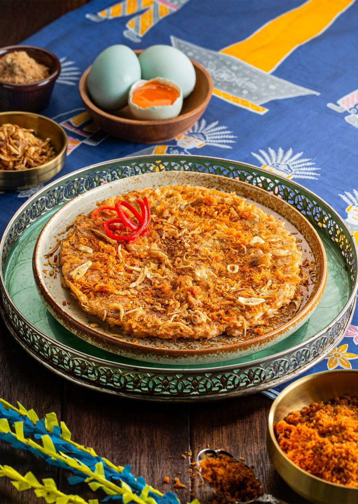
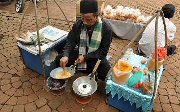

Apa itu Kerak Telor?

Mahakarya Kuliner Tradisional Asli Jakarta
Kerak Telor adalah makanan asli daerah Jakarta (Betawi), yang terbuat dari bahan-bahan utama beras ketan putih, telur ayam atau bebek, ebi (udang kering yang diasinkan dan disangrai kering), ditambah bawang merah goreng, lalu diberi bumbu halus khusus.
Beras Ketan Berkualitas
Dimasak pulen di atas wajan khusus tanpa minyak.
Serundeng & Ebi
Memberikan aroma harum khas yang menggugah selera.
Sejarah & Perjalanan Kerak Telor
Awal Mulai Ciptaan Tanpa Sengaja
Kerak telor lahir dari kreativitas masyarakat Betawi di kawasan Menteng, Batavia pada tahun 1920-an. Awalnya, warga lokal berupaya memanfaatkan berlimpahnya pohon kelapa dengan meracik adonan ketan dan bumbu tradisional yang dimasak di atas wajan tanpa minyak.
Menjadi Hidangan Mewah & Ikonik
Pada masa kepemimpinan Gubernur Ali Sadikin, keberadaan Kerak Telor mulai diangkat dan dipromosikan sebagai identitas budaya Betawi. Kerak Telor saat itu menjadi santapan berkelas yang kerap dihidangkan dalam acara-acara formal Pemprov DKI Jakarta dan pesta rakyat.
Warisan Budaya yang Tetap Abadi
Makanan ini tidak hanya sekadar kuliner lezat, melainkan lambang kehangatan dan keragaman budaya Batavia. Hingga saat ini, Kerak Telor menjadi kuliner wajib yang paling dicari setiap perayaan Hari Ulang Tahun Jakarta maupun event tahunan Pekan Raya Jakarta (PRJ).


Cara Pembuatan Kerak Telor
🎬 Video Tutorial Pembuatan
Rahasia Resep Kerak Telor Khas Betawi
Kerak Telor Rumahan (Pakai Teflon)
Rekomendasi Tempat Kerak Telor
Beberapa tempat di Jakarta yang dapat dikunjungi untuk menikmati kerak telor khas Betawi.
Wall of Memories
Beri rating dan bagikan pengalamanmu tentang Kerak Telor.
Bagikan pengalamanmu
Ulasan Pengunjung
Belum ada ulasan.